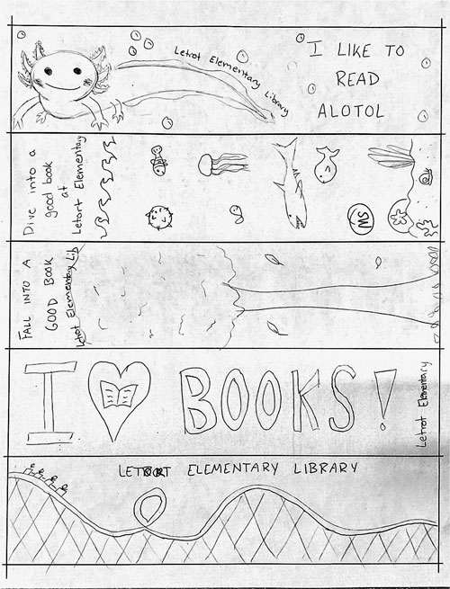
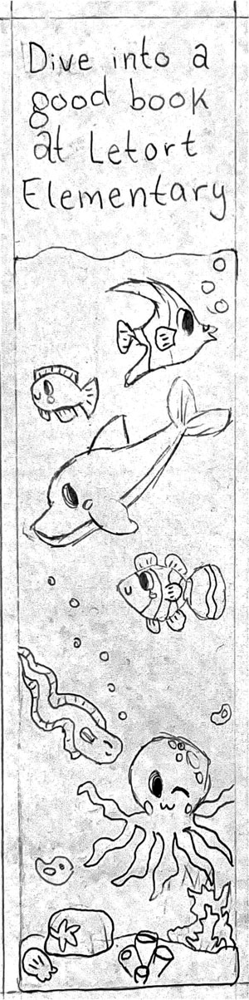
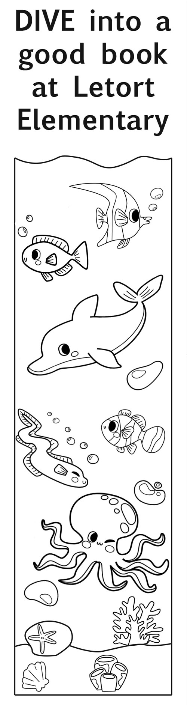
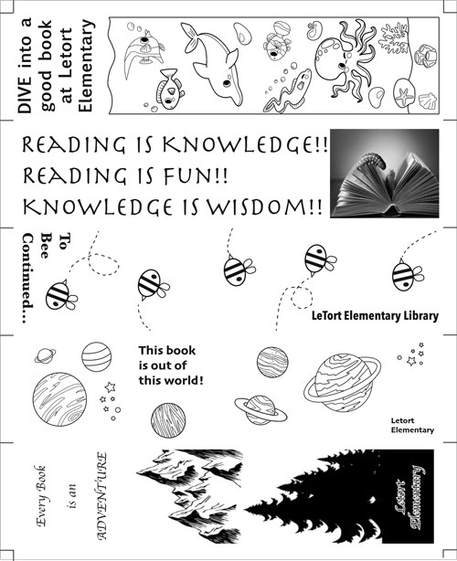

Alyssa Warner Portfolio- Print Project |
|
| Home Print Project Photo Project Video Project Infographic Project | |
|
The print project allowed AENG 110 students to design, create, and print custom bookmarks for elementary school children. The project started with 5 thumbnail sketches, as you can see on the left. Once the best sketch was selected, it was redrawn with more detail to show how the final product would look.  The bookmark is then created using Adobe Indesign. For this layout, multiple graphics were used and layered to create the ocean scene. The final product, on the left, was 2in by 8in. The image on the right shows the group layout used for printing. 5 members of the class joined their designs in order to create an efficient printing sheet. Guide lines were used around the edges to assist the group when cutting the final product after printing.   |
|
| Home Print Project Photo Project Video Project Infographic Project | |
|
© 2024 Alyssa Warner | |